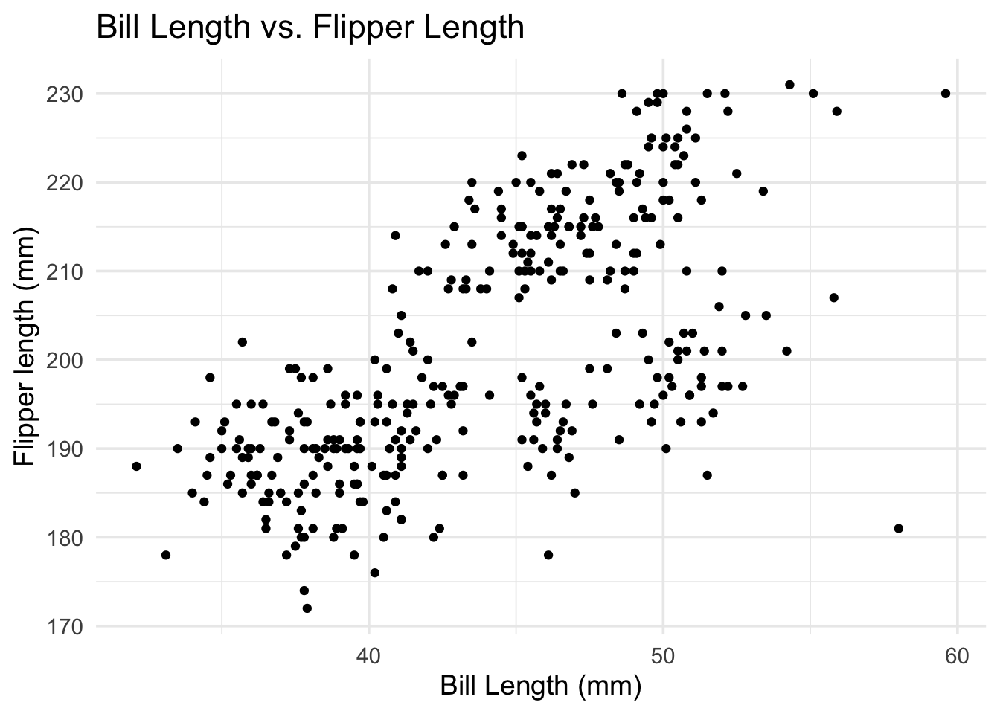
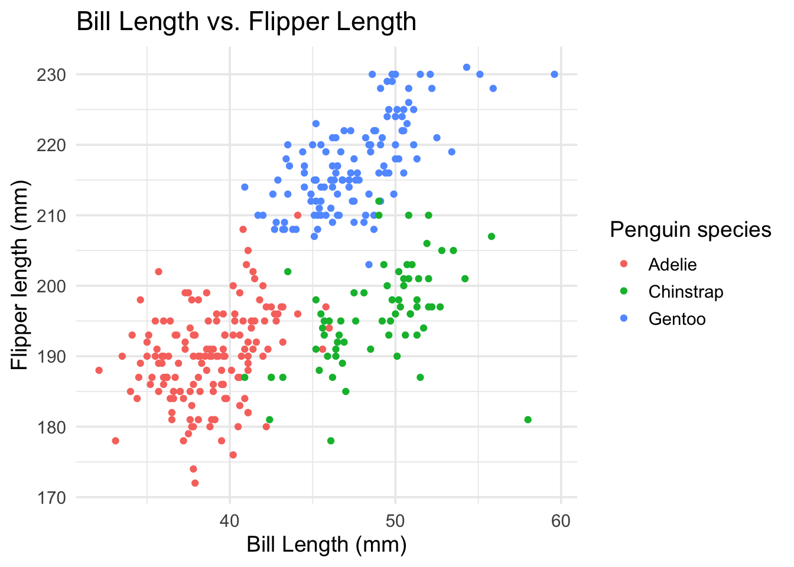
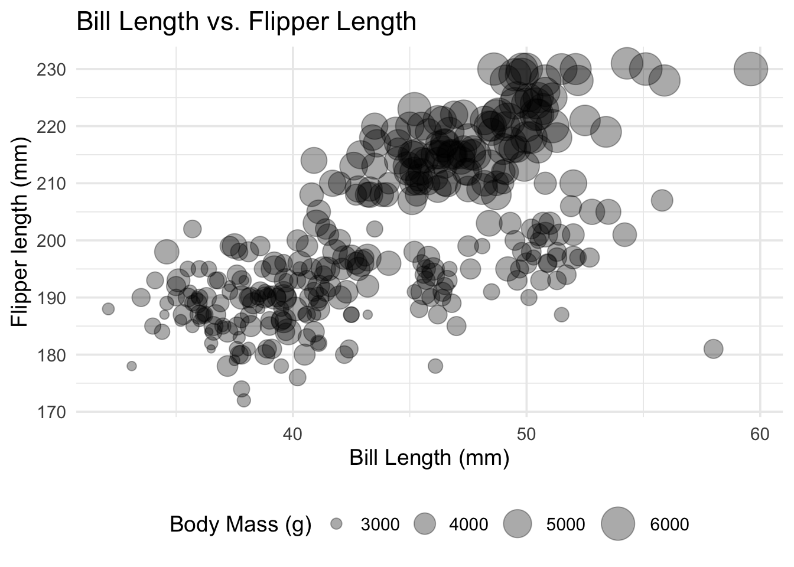
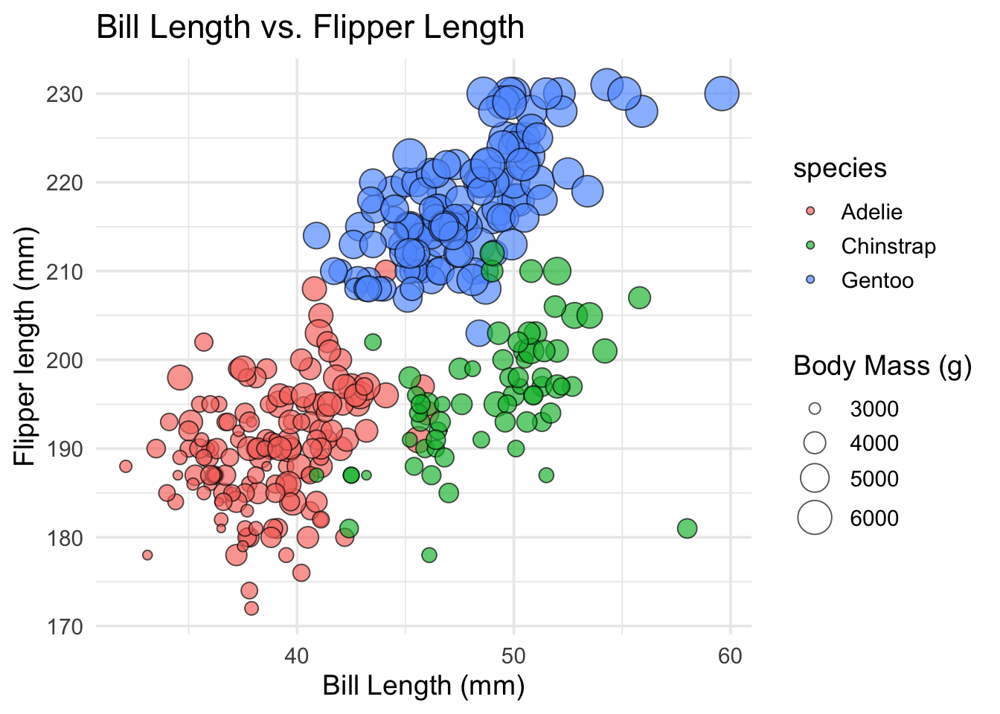
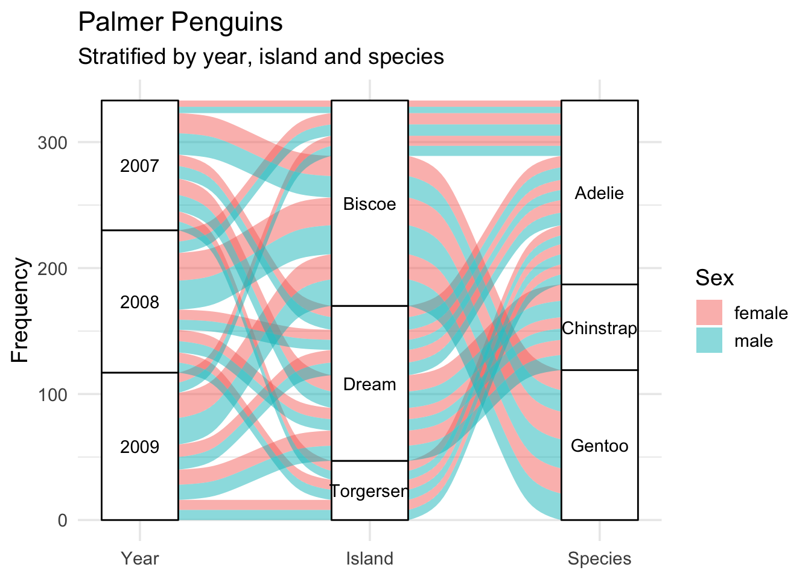
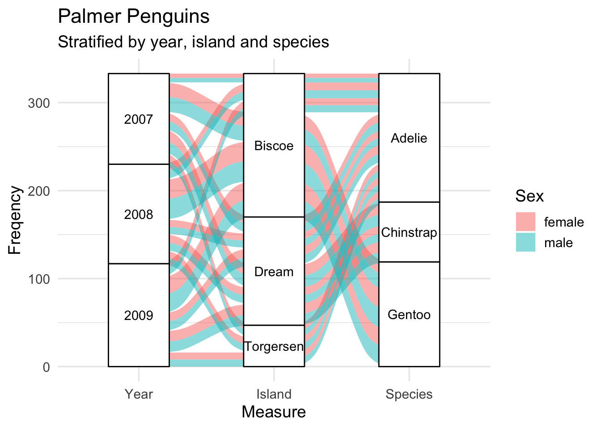
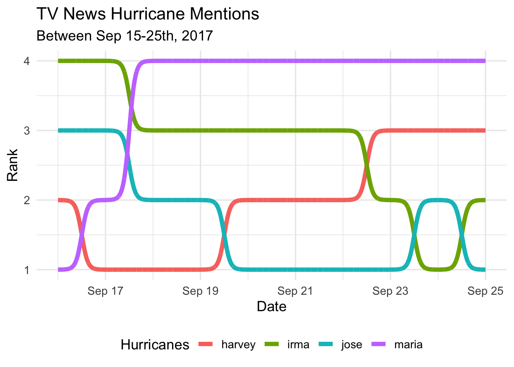

install.packages("palmerpenguins")
library(palmerpenguins)
library(ggplot2)RELATIONSHIPS
Trends, correlations, and connections with ggplot2 (and friends!)
SCATTER PLOT
Note
When would I use this graph?
Scatter plots are used to display two continuous variables.
If one of the continuous variables is assumed to affect the other (i.e., outcome vs. predictor), place the outcome on the y axis and the predictor on the x axis.
PACKAGES:
Install packages.
DATA:
The penguins data
penguins <- palmerpenguins::penguins
glimpse(penguins)Rows: 344
Columns: 8
$ species <fct> Adelie, Adelie, Adelie, Adelie, Adelie, Adelie, Adel…
$ island <fct> Torgersen, Torgersen, Torgersen, Torgersen, Torgerse…
$ bill_length_mm <dbl> 39.1, 39.5, 40.3, NA, 36.7, 39.3, 38.9, 39.2, 34.1, …
$ bill_depth_mm <dbl> 18.7, 17.4, 18.0, NA, 19.3, 20.6, 17.8, 19.6, 18.1, …
$ flipper_length_mm <int> 181, 186, 195, NA, 193, 190, 181, 195, 193, 190, 186…
$ body_mass_g <int> 3750, 3800, 3250, NA, 3450, 3650, 3625, 4675, 3475, …
$ sex <fct> male, female, female, NA, female, male, female, male…
$ year <int> 2007, 2007, 2007, 2007, 2007, 2007, 2007, 2007, 2007…CODE:
Create the labels
Map bill_length_mm to the x axis
Map flipper_length_mm to the y axis
Add geom_point()
labs_scatter <- labs(
title = "Bill Length vs. Flipper Length",
x = "Bill Length (mm)", y = "Flipper length (mm)")
ggp2_scatter <- penguins |>
ggplot(
aes(x = bill_length_mm,
y = flipper_length_mm)) +
geom_point()
ggp2_scatter +
labs_scatterGRAPH:
If multiple points occupy the same value position, use transparency (alpha) to improve visibility.

GROUPED SCATTER PLOT
Note
When would I use this graph?
To display the relationship between two continuous variables across a third categorical variable. Use color to distinguish between categorical levels across the two continuous variable.
PACKAGES:
Install packages.
install.packages("palmerpenguins")
library(palmerpenguins)
library(ggplot2)DATA:
The penguins data.
penguins <- palmerpenguins::penguins
glimpse(penguins)Rows: 344
Columns: 8
$ species <fct> Adelie, Adelie, Adelie, Adelie, Adelie, Adelie, Adel…
$ island <fct> Torgersen, Torgersen, Torgersen, Torgersen, Torgerse…
$ bill_length_mm <dbl> 39.1, 39.5, 40.3, NA, 36.7, 39.3, 38.9, 39.2, 34.1, …
$ bill_depth_mm <dbl> 18.7, 17.4, 18.0, NA, 19.3, 20.6, 17.8, 19.6, 18.1, …
$ flipper_length_mm <int> 181, 186, 195, NA, 193, 190, 181, 195, 193, 190, 186…
$ body_mass_g <int> 3750, 3800, 3250, NA, 3450, 3650, 3625, 4675, 3475, …
$ sex <fct> male, female, female, NA, female, male, female, male…
$ year <int> 2007, 2007, 2007, 2007, 2007, 2007, 2007, 2007, 2007…CODE:
Create the labels
Map bill_length_mm to the x axis
Map flipper_length_mm to the y axis
Map species to color inside the geom_point()
labs_grp_scatter <- labs(
title = "Bill Length vs. Flipper Length",
x = "Bill Length (mm)", y = "Flipper length (mm)",
color = "Penguin species")
ggp2_grp_scatter <- penguins |>
ggplot(
aes(x = bill_length_mm,
y = flipper_length_mm)) +
geom_point(aes(color = species))
ggp2_grp_scatter +
labs_grp_scatterGRAPH:
Adjust over-plotting with transparency (alpha)

BUBBLE CHART
Note
When would I use this graph?
Bubble graphs display relationships between three continuous variables.
The position on the x and y axis illustrates the relationship between the first two, and the size of the point (i.e., bubble) conveys the value of the third.
PACKAGES:
Install packages.
install.packages("palmerpenguins")
library(palmerpenguins)
library(ggplot2)DATA:
The penguins data
penguins <- palmerpenguins::penguins
glimpse(penguins)Rows: 344
Columns: 8
$ species <fct> Adelie, Adelie, Adelie, Adelie, Adelie, Adelie, Adel…
$ island <fct> Torgersen, Torgersen, Torgersen, Torgersen, Torgerse…
$ bill_length_mm <dbl> 39.1, 39.5, 40.3, NA, 36.7, 39.3, 38.9, 39.2, 34.1, …
$ bill_depth_mm <dbl> 18.7, 17.4, 18.0, NA, 19.3, 20.6, 17.8, 19.6, 18.1, …
$ flipper_length_mm <int> 181, 186, 195, NA, 193, 190, 181, 195, 193, 190, 186…
$ body_mass_g <int> 3750, 3800, 3250, NA, 3450, 3650, 3625, 4675, 3475, …
$ sex <fct> male, female, female, NA, female, male, female, male…
$ year <int> 2007, 2007, 2007, 2007, 2007, 2007, 2007, 2007, 2007…CODE:
Create the labels
Map bill_length_mm to x axis
Map flipper_length_mm to y axis
Map body_mass_g to size
Set alpha to 1/3
Add scale_size(), set the range to c(0.1, 10) and name to "Body Mass (g)"
Move the legend to the bottom of the graph with theme(legend.position = "bottom")
labs_bubble <- labs(
title = "Bill Length vs. Flipper Length",
x = "Bill Length (mm)", y = "Flipper length (mm)",
size = "Body Mass (g)")
ggp2_bubble <- penguins |>
ggplot(
aes(x = bill_length_mm, y = flipper_length_mm)) +
geom_point(aes(size = body_mass_g), alpha = 1/3) +
scale_size(range = c(.1, 10),
name = "Body Mass (g)") +
theme(legend.position = "bottom")
ggp2_bubble +
labs_bubbleGRAPH:
Once again, transparency (alpha) can be used to handle over-plotting

GROUPED BUBBLE CHART
Note
When would I use this graph?
In addition to size, the grouped bubble graph uses color to display differences across categorical levels.
PACKAGES:
Install packages.
install.packages("palmerpenguins")
library(palmerpenguins)
library(ggplot2)DATA:
The penguins data
penguins <- palmerpenguins::penguins
glimpse(penguins)Rows: 344
Columns: 8
$ species <fct> Adelie, Adelie, Adelie, Adelie, Adelie, Adelie, Adel…
$ island <fct> Torgersen, Torgersen, Torgersen, Torgersen, Torgerse…
$ bill_length_mm <dbl> 39.1, 39.5, 40.3, NA, 36.7, 39.3, 38.9, 39.2, 34.1, …
$ bill_depth_mm <dbl> 18.7, 17.4, 18.0, NA, 19.3, 20.6, 17.8, 19.6, 18.1, …
$ flipper_length_mm <int> 181, 186, 195, NA, 193, 190, 181, 195, 193, 190, 186…
$ body_mass_g <int> 3750, 3800, 3250, NA, 3450, 3650, 3625, 4675, 3475, …
$ sex <fct> male, female, female, NA, female, male, female, male…
$ year <int> 2007, 2007, 2007, 2007, 2007, 2007, 2007, 2007, 2007…CODE:
Create the labels
Map bill_length_mm to the x axis and flipper_length_mm to the y axis
Inside geom_point()
map
body_mass_gtosizeandspeciestofillset the
alphato2/3, shape to21, andcolorto"black"
In the scale_size()
- set
rangetoc(.04, 8)andnameto"Body Mass (g)"
labs_grp_bubble <- labs(
title = "Bill Length vs. Flipper Length",
x = "Bill Length (mm)", y = "Flipper length (mm)",
size = "Body Mass (g)")
ggp2_grp_bubble <- penguins |>
ggplot(aes(
x = bill_length_mm, y = flipper_length_mm)) +
geom_point(
aes(size = body_mass_g, fill = species),
alpha = 2/3, shape = 21, color = "black") +
scale_size(range = c(.04, 8), name = "Body Mass (g)")
ggp2_grp_bubble +
labs_grp_bubbleGRAPH:

ALLUVIAL GRAPHS
Note
When would I use this graph?
An alluvial graph displays the changes in composition or flow over time or across multiple categories.
We can build bump charts in ggplot2 with the ggalluvial package:
PACKAGES:
Install packages.
devtools::install_github("corybrunson/ggalluvial")
library(ggalluvial)
install.packages("palmerpenguins")
library(palmerpenguins)
library(ggplot2)DATA:
Below we create a wide example of the penguins data (as peng_wide)
peng_wide <- penguins |>
drop_na() |>
count(year, island, sex, species) |>
mutate(year = factor(year)) |>
rename(freq = n)
glimpse(peng_wide)Rows: 30
Columns: 5
$ year <fct> 2007, 2007, 2007, 2007, 2007, 2007, 2007, 2007, 2007, 2007, 20…
$ island <fct> Biscoe, Biscoe, Biscoe, Biscoe, Dream, Dream, Dream, Dream, To…
$ sex <fct> female, female, male, male, female, female, male, male, female…
$ species <fct> Adelie, Gentoo, Adelie, Gentoo, Adelie, Chinstrap, Adelie, Chi…
$ freq <int> 5, 16, 5, 17, 9, 13, 10, 13, 8, 7, 9, 22, 9, 23, 8, 9, 8, 9, 8…CODE:
Create the labels (with ggtitle(), ylab(), and labs())
Add scale_x_discrete() with the limits set to "Year", "Island" and "Species", and expand to 0.1 and 0.07
Add geom_alluvium() with fill set to the sex variable and geom_stratum()
Add geom_text(), with stat set to stratum and label set to after_stat(stratum) (inside aes())
labs_alluvial <- ggtitle(label = "Palmer Penguins",
subtitle = "Stratified by year, island and species")
labs_alluvial_y <- ylab("Frequency")
labs_alluvial_fill <- labs(fill = "Sex")
ggp2_alluvial_w <- ggplot(data = peng_wide,
aes(axis1 = year, axis2 = island,
axis3 = species, y = freq)) +
scale_x_discrete(
limits = c("Year", "Island", "Species"),
expand = c(0.1, 0.07)) +
geom_alluvium(aes(fill = sex)) +
geom_stratum() +
geom_text(stat = "stratum",
aes(label = after_stat(stratum)))
ggp2_alluvial_w +
labs_alluvial +
labs_alluvial_y +
labs_alluvial_fillGRAPH:
The ggalluvial functions can handle wide or long data.

ALLUVIAL GRAPH (LODES FORM)
DATA:
Below we create peng_lodes from the penguins dataset using the to_lodes_form() from the ggalluvial package.
peng_lodes <- penguins |>
select(Year = year, Island = island,
Species = species, Sex = sex) |>
drop_na() |>
count(Year, Island, Species, Sex) |>
mutate(Year = factor(Year)) |>
rename(Freqency = n) |>
ggalluvial::to_lodes_form(key = "Measure", axes = 1:3)
glimpse(peng_lodes)Rows: 90
Columns: 5
$ Sex <fct> female, male, female, male, female, male, female, male, femal…
$ Freqency <int> 5, 5, 16, 17, 9, 10, 13, 13, 8, 7, 9, 9, 22, 23, 8, 8, 9, 9, …
$ alluvium <int> 1, 2, 3, 4, 5, 6, 7, 8, 9, 10, 11, 12, 13, 14, 15, 16, 17, 18…
$ Measure <fct> Year, Year, Year, Year, Year, Year, Year, Year, Year, Year, Y…
$ stratum <fct> 2007, 2007, 2007, 2007, 2007, 2007, 2007, 2007, 2007, 2007, 2…CODE:
Create the labels
Map Measure to x, Frequency to y, stratum to stratum, alluvium to alluvium, and label to stratum.
Add the geom_alluvium() and map Sex to fill
Add the geom_stratum() and set the width to 0.45
Add geom_text() and set stat to "stratum"
labs_alluvial <- ggtitle(label = "Palmer Penguins",
subtitle = "Stratified by year, island and species")
ggp2_alluvial_lf <- ggplot(data = peng_lodes,
aes(x = Measure,
y = Freqency,
stratum = stratum,
alluvium = alluvium,
label = stratum)) +
ggalluvial::geom_alluvium(aes(fill = Sex)) +
ggalluvial::geom_stratum(width = 0.45) +
geom_text(stat = "stratum")
ggp2_alluvial_lf +
labs_alluvialGRAPH:
Convert data to lodes form using to_lodes_form() from the ggalluvial package.

BUMP CHART
Note
When would I use this graph?
Bump charts show how numerical (ranked) values change over time for different categories (or groups). Differences are represented with connecting lines (along the y axis) that cover the full timescale (along the x axis).
We can build bump charts in ggplot2 with the ggbump package:
PACKAGES:
Install packages.
devtools::install_github("davidsjoberg/ggbump")
library(ggbump)
install.packages("fivethirtyeight")
library(fivethirtyeight)
library(ggplot2)DATA:
We’ll use the fivethirtyeight::tv_hurricanes data, but slightly restructured and filtered.
fivethirtyeight::tv_hurricanes |>
filter(date > as_date("2017-09-15")) |>
pivot_longer(cols = -date,
names_to = 'hurricane',
values_to = 'value') |>
group_by(date) |>
mutate(rank = rank(value,
ties.method = "random")) |>
ungroup() -> tidy_hurricanes
glimpse(tidy_hurricanes)Rows: 40
Columns: 4
$ date <date> 2017-09-16, 2017-09-16, 2017-09-16, 2017-09-16, 2017-09-17,…
$ hurricane <chr> "harvey", "irma", "maria", "jose", "harvey", "irma", "maria"…
$ value <dbl> 0.0207, 0.1087, 0.0000, 0.0355, 0.0087, 0.1090, 0.0184, 0.03…
$ rank <int> 2, 4, 1, 3, 1, 4, 2, 3, 1, 3, 4, 2, 1, 3, 4, 2, 2, 3, 4, 1, …CODE:
Create the labels
Map date to the x, rank to the y, and hurricane to color
Add ggbump::geom_bump() and set size to 2
Move legend to bottom with
labs_bump <- labs(title = "TV News Hurricane Mentions",
subtitle = "Between Sep 15-25th, 2017",
x = "Date", y = "Rank",
color = "Hurricanes")
ggp2_bump <- ggplot(tidy_hurricanes,
aes(x = date,
y = rank,
color = hurricane)) +
ggbump::geom_bump(size = 2) +
theme(legend.position = "bottom")
ggp2_bump +
labs_bumpGRAPH:
